Created for a Duolingo design challenge, Fold With Nara is a pop-up installation that introduces Japanese culture through a guided origami experience visitors can complete in under ten minutes.
Fold With Nara is a physical learning experience created for a Duolingo design challenge that introduces Japanese culture through guided origami in under ten minutes.
Users learn, make something by hand, and leave with an object they can keep or add to the shared origami installation created by other visitors.
A guided ten-minute journey
At each kiosk, visitors choose an origami model and follow a guided lesson combining cultural questions with projected folding instructions. Instant feedback and repetition help them learn as they fold.
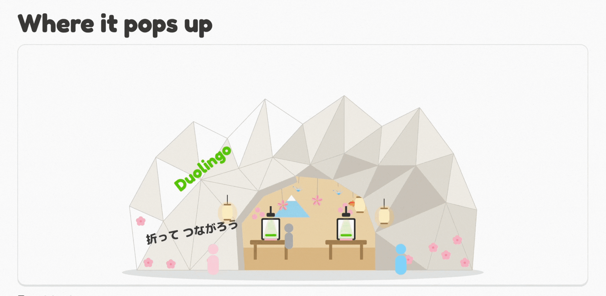
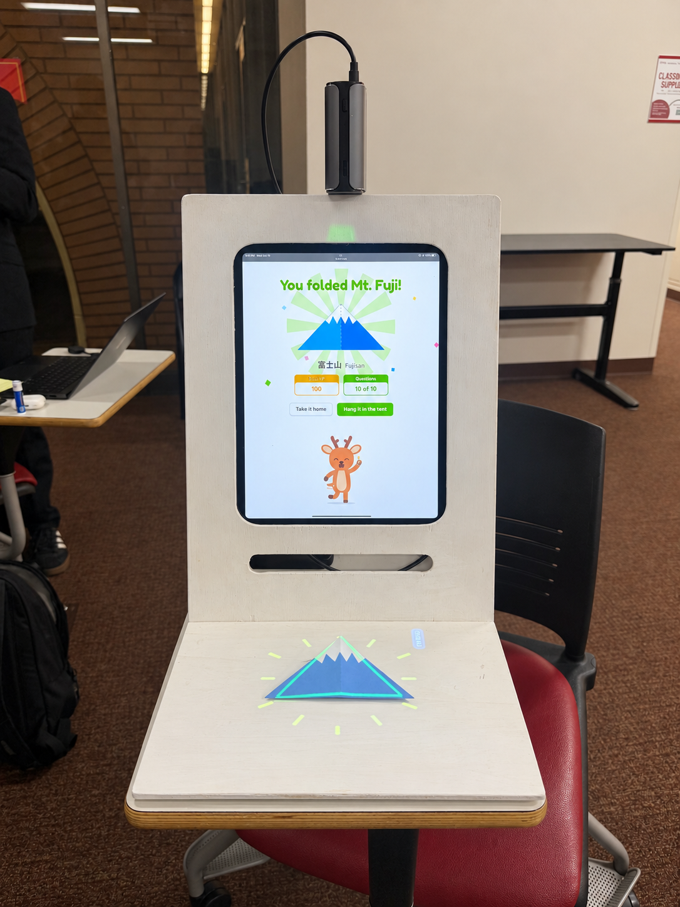
The physical prototype
A hand-made installation built from white-painted plywood combines the digital lesson and projected guidance.
Meet Nara
Inspired by the sika deer in Nara Park, Nara guides visitors through their cultural learning journey with seven reactions that respond to progress and incorrect answers.
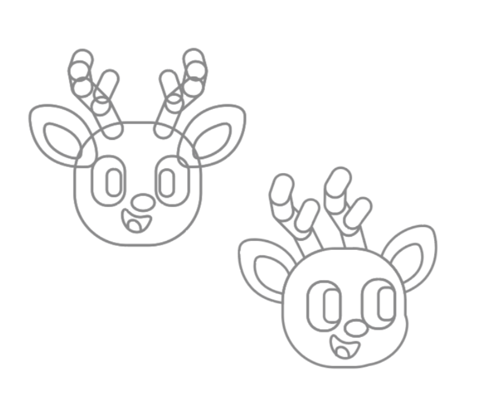
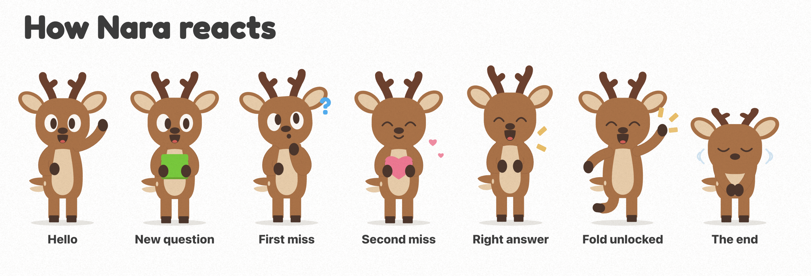
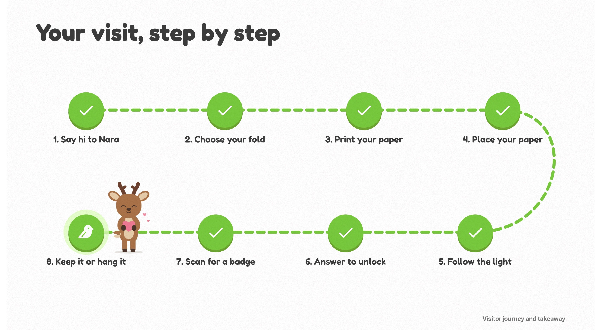
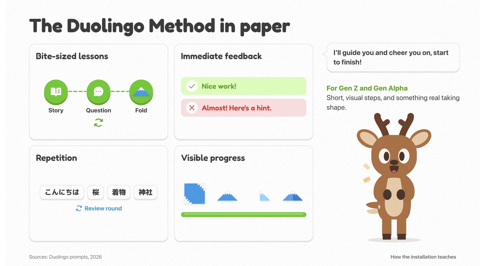
Example Lesson
Short questions, visible progress, and immediate feedback guide each visitor from the first cultural prompt to a completed origami fold.
Time often feels invisible and abstract, especially for students struggling with procrastination. Traditional timers and apps can feel cold, stressful, or easy to ignore. I designed Tik-Tock Glow to make time feel more present, calming, and intuitive.
Shaped like an hourglass, the device uses soft, glowing light to indicate time passing. Flipping the hourglass starts the timer. As the countdown runs, light flows smoothly from top to bottom inside the translucent body, a visual metaphor for time slipping away. I programmed the light sequences using Arduino to create a soft and continuous movement, helping users experience time as tangible rather than stressful.
UI/UXProduct Design2025Rhino · Arduino · Figma
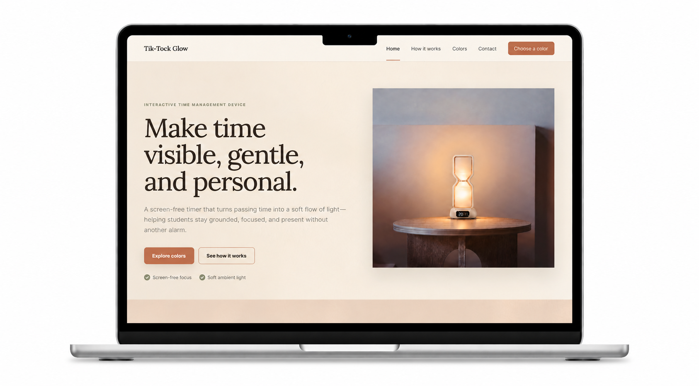
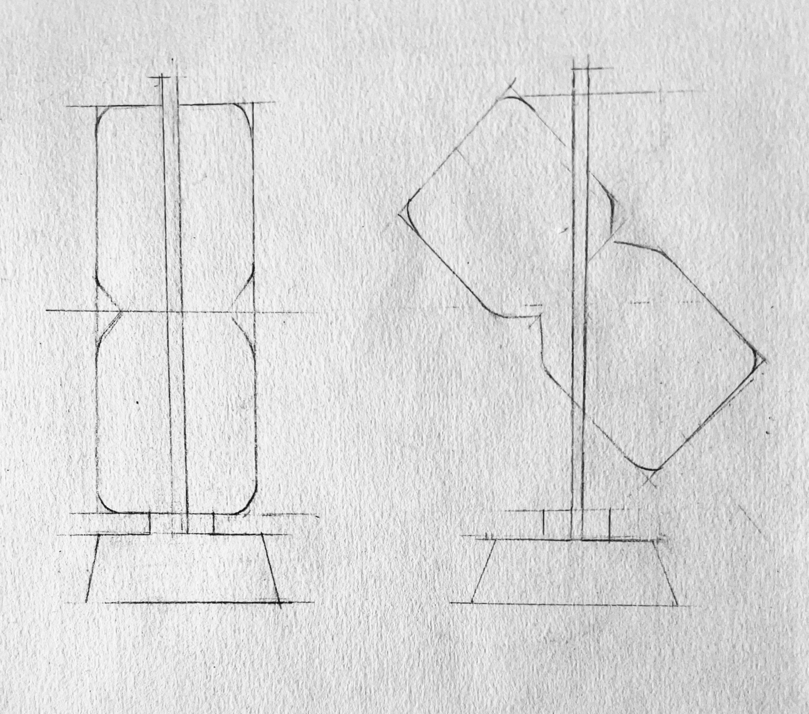
Product sketch
I explored the hourglass form where there is a base and a frame around the main form.
Hand-made prototype
The hand-made model established the hourglass form, supporting frame, translucent body, and timer base.
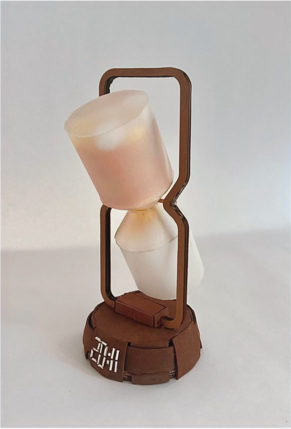
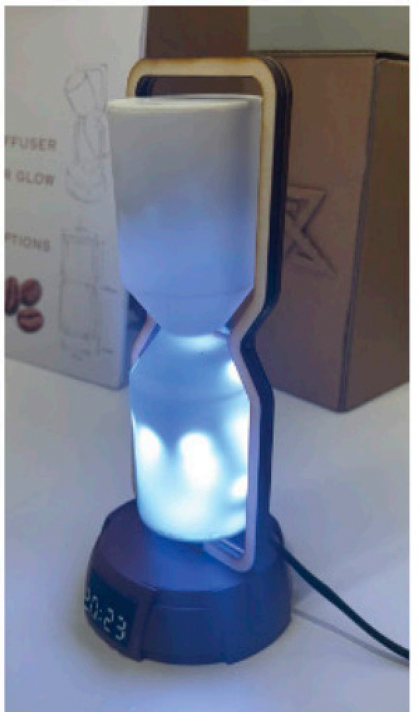
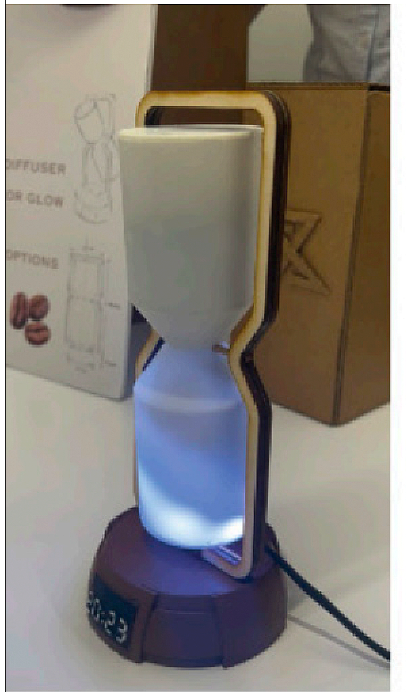
Working prototype
The final prototype tests the programmed light sequence as it moves through the translucent hourglass body.
Designing the digital experience
The website introduces the device as a calm, screen-free timer, then guides visitors through its purpose and interaction in a warm visual system.
Choosing a light mode
Visitors can set the timer, compare white, yellow, and blue light modes, and apply their preferred color before beginning a focus session.
To address low engagement with battery recycling at school, I created an interactive recycling bin that made the process both fun and educational.
Inspired by childhood shape-sorting toys, I designed this battery collection box with carved shapes and an animated battery model in Blender, integrated into a WebAR experience. I repurposed discarded cardboard shipping boxes, and the project increased the school’s battery recycling by more than 50%.
Product Design2026Blender · WebAR · Cardboard
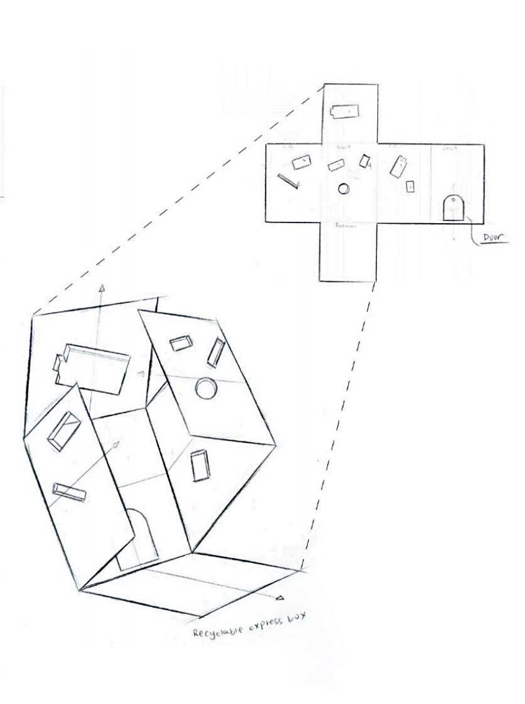
Box sketch
Easy to obtain and fast to produce. I used an Amazon cardboard box as the base material and a pre-made laser-cutting file for the battery shapes.
Story Board
I developed four shaped openings that turn battery sorting into an intuitive matching activity, making the recycling process more playful and easy to understand.
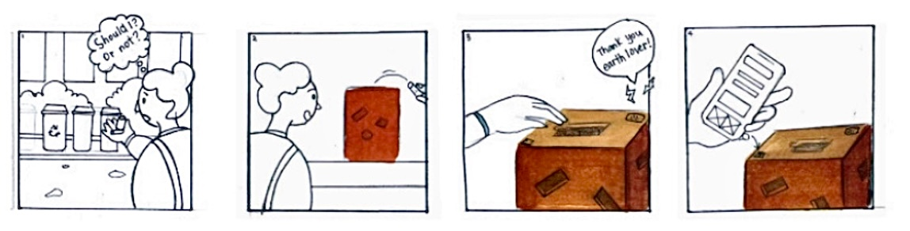
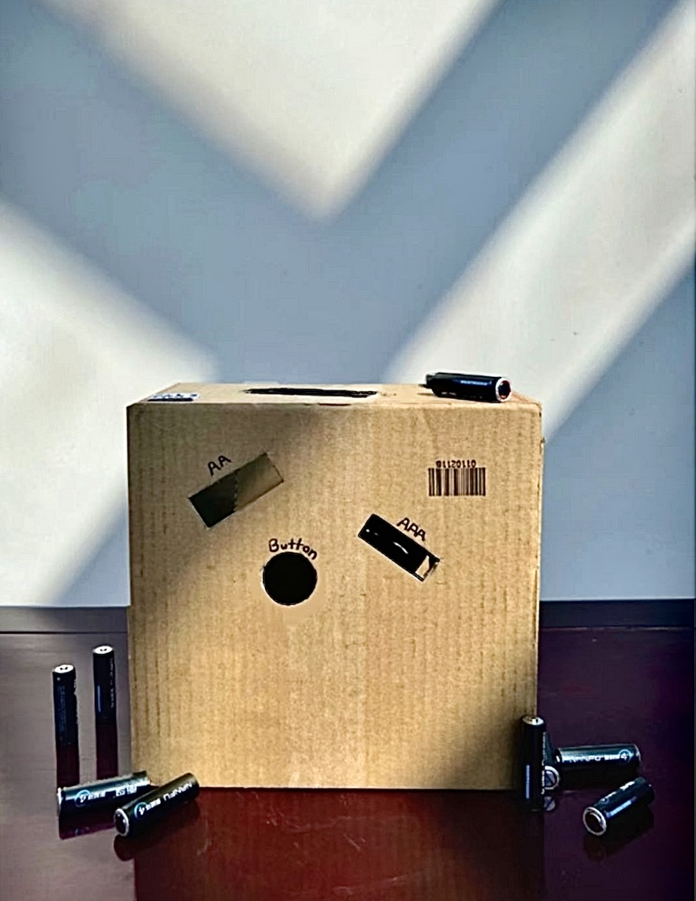
Physical recycling box
I repurposed a discarded cardboard shipping box and cut the shaped openings into its surface, giving the material a second life while creating a durable collection point for the school.
WebAR interaction
I animated a battery model in Blender and connected it to a WebAR experience so students could see the recycling process come alive after interacting with the box.
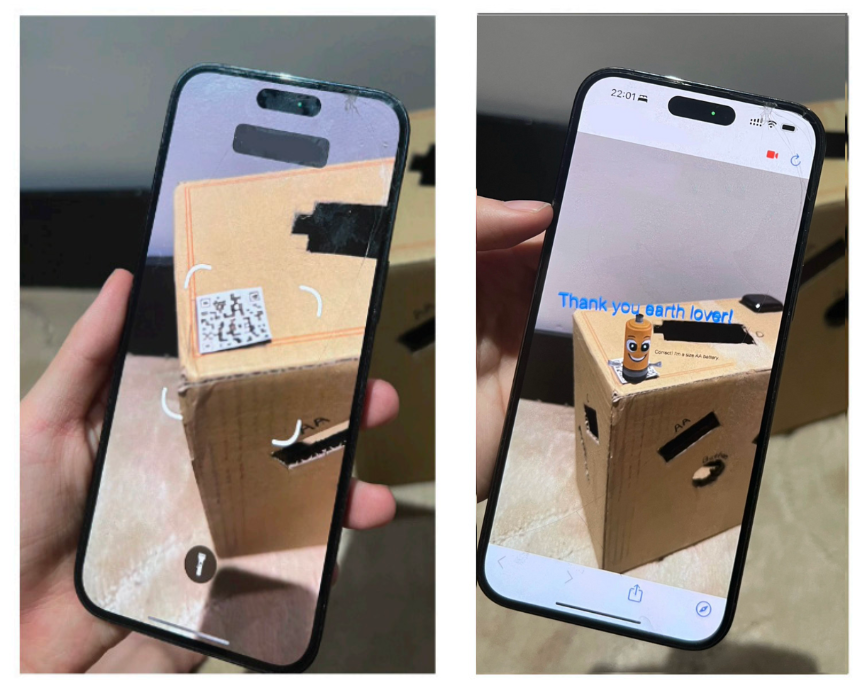
Creativity, Design,and Technology.
Hi, I’m Sophia, a passionate designer at the University of Southern California, studying Arts, Technology and the Business of Innovation. Through my studies, I explore the intersection of creativity, design, and technology, with a focus on human-centered design.
 Product Design · 2024Environmental Council MerchandiseProject details ↗
Product Design · 2024Environmental Council MerchandiseProject details ↗
 Digital Design · 2026Book Cover DesignProject details ↗
Digital Design · 2026Book Cover DesignProject details ↗
 Spatial Design · 2025Wood WaveProject details ↗
Spatial Design · 2025Wood WaveProject details ↗
 Drawing · 2025Behind the BlindsProject details ↗
Drawing · 2025Behind the BlindsProject details ↗
 Drawing · 2024Plastic BagsProject details ↗
Drawing · 2024Plastic BagsProject details ↗
 Drawing · 2025Strength of HandsProject details ↗
Drawing · 2025Strength of HandsProject details ↗